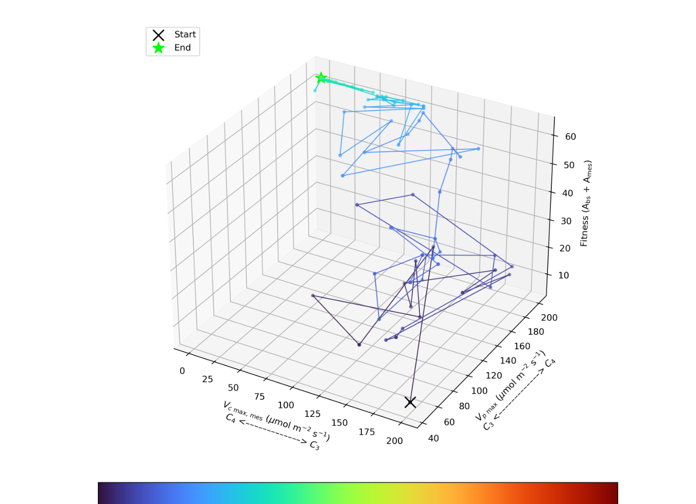
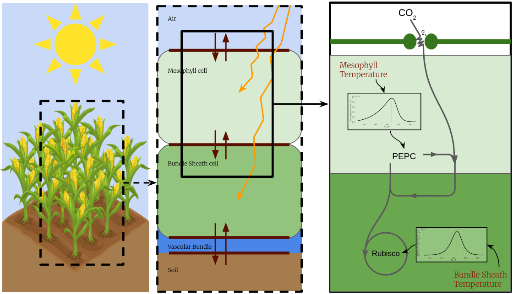
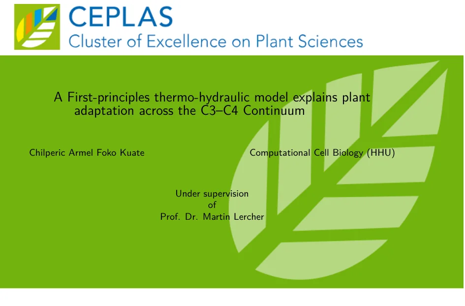
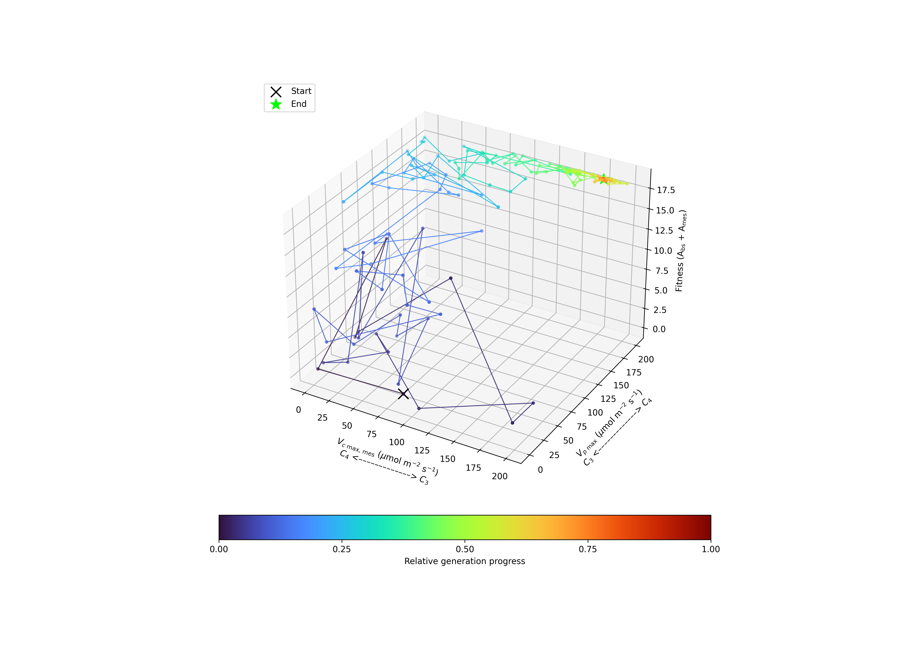
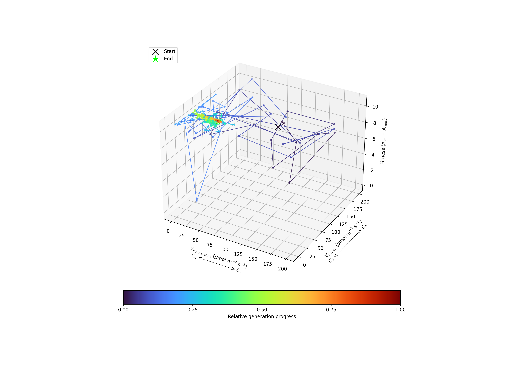
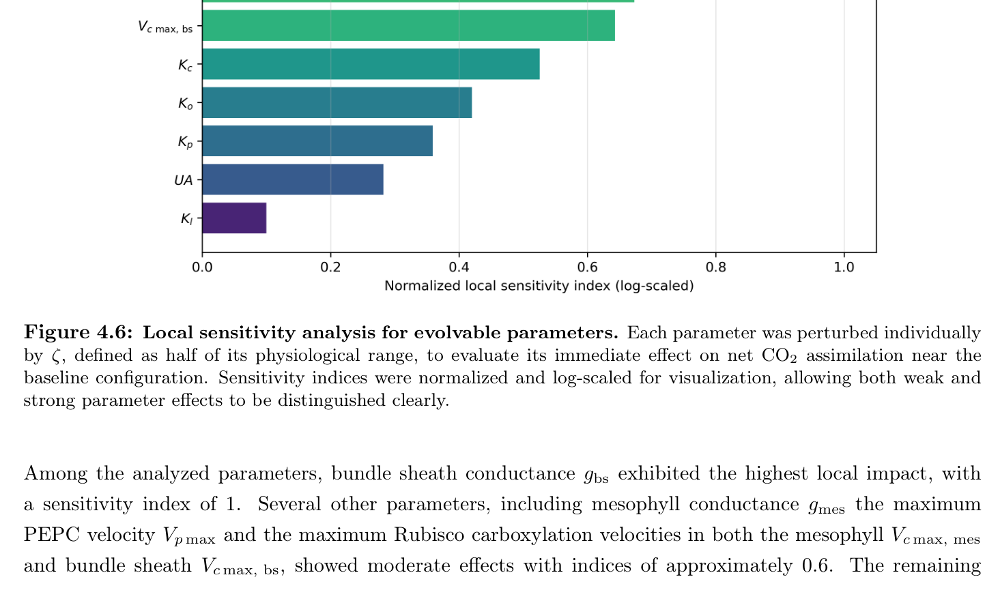
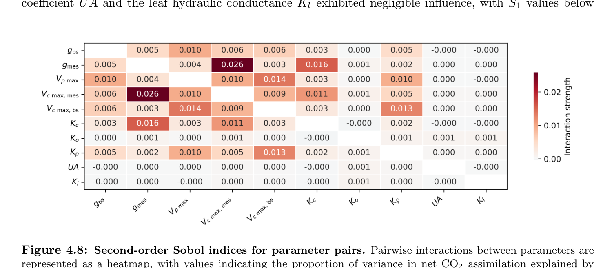
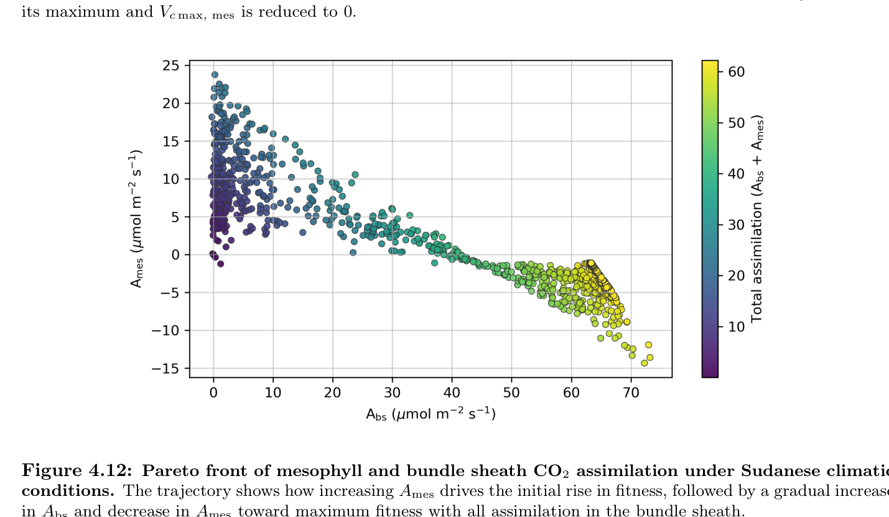
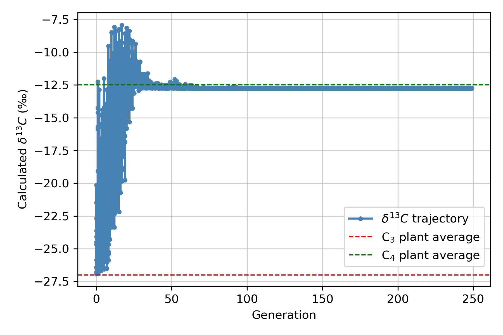

3D evolution
Sudan trajectory
Visualizes how trait allocation moves from C3-like starting conditions toward a climate-specific optimum.
Flagship research · unpublished plant project
First-principles modeling across the C3–C4 continuum
A portfolio-level view of a First-principles thermo-hydraulic unpublished plant model coupling climate forcing, leaf heat transfer, hydraulics, compartmental photosynthesis, trait optimization, sensitivity analysis and evolutionary interpretation.

| Chilperic Armel Foko Kuate | Project leader: research design, model architecture, core code, major implementation, visual analysis and scientific integration. |
| Yvonne Danisch | Bachelor thesis contribution: implementation work, execution, validation and analysis within the project framework. |
| Jérémie Muller-Prokob | Scientific supervision, technical discussion and guidance. |
| Prof. Dr. Martin Lercher | PI supervision, research environment and funding. |
| Antonio Rigueiro | Additional paper-level contribution. |
This plant project is unpublished. This page is a portfolio-level presentation. It does not distribute source code and does not expose source code, notebooks, parameter files, calibration data, raw result files, Python/SALib exports, JSON/CSV reports, ZIPs, or full-model downloads. In short: no source code, no parameter files, and no full-model downloads are provided.
Simulation access: only reduced explanatory surrogates are available.
Which environmental and physiological constraints make C3-like, C4-like, or intermediate photosynthetic phenotypes favorable?
Classical photosynthesis models often isolate gas exchange or enzyme kinetics. This project instead treats adaptation as an integrated physical-biochemical problem. Solar radiation changes compartment temperature; temperature changes enzyme performance; hydraulic capacity constrains cooling and stomatal conductance; and the resulting assimilation landscape shapes the trait combinations selected by an evolutionary optimizer.
I designed a first-principles modeling framework where environmental forcing acts through physical leaf temperature, hydraulic cooling and compartment-specific biochemical kinetics. The public browser layer uses reduced surrogates only; the full unpublished model remains protected.
Scientific figure first. The graphical abstract below is the primary architecture figure; the text explains its modeling layers without replacing it by an invented schematic.
The model treats the leaf as a structured system, not a single homogeneous photosynthetic surface. The central compartments are mesophyll, bundle sheath and soil/environmental boundary conditions. The public story is therefore the coupling of:

| Biochemistry | Farquhar–von Caemmerer-style C3 core extended toward C4/intermediate states with PEPC and Rubisco activity in relevant compartments. |
| Physics | Energy-balance formulation for compartment temperatures with radiative, convective, conductive and transpirative cooling terms. |
| Hydraulics | Water transport and cooling limits used to connect carbon gain to water availability and environmental stress. |
| Optimization | Evolutionary trait search over climate-specific objective landscapes rather than a single hand-tuned parameter set. |
| Interrogation | Local sensitivity, Sobol first/total-order indices, second-order interactions, Pareto fronts and 3D evolutionary trajectories. |
The most persuasive outputs are the 3D evolutionary trajectories, local sensitivity analysis, Sobol first/total-order indices, second-order Sobol interactions, and Pareto fronts.
The sellable result is not one final optimum. The result is a set of alternative adaptive routes. Hot and water-limited climates can push the system toward C4-like allocation, while cooler or less constraining climates can stabilize intermediate regimes. The 3D trajectories show how trait space is traversed; sensitivity analysis shows which traits deserve biological attention; Pareto fronts expose the trade-off between mesophyll and bundle-sheath assimilation.

3D evolution
Visualizes how trait allocation moves from C3-like starting conditions toward a climate-specific optimum.

3D evolution
Emphasizes adaptation under hot, dry, high-radiation constraints.

3D evolution
Contrasting climate case; useful to show that adaptation is not one universal path.

Local sensitivity
Shows which biological parameters most strongly affect assimilation near a reference state.

Global sensitivity
Separates direct effects from interaction-dependent effects under parameter uncertainty.

Interaction structure
Demonstrates that adaptation depends on combinations of traits, not one magic parameter.

Trade-off
Shows alternative allocations between mesophyll and bundle-sheath assimilation.

Diagnostic
Interpretable diagnostic for motion along the C3–C4 continuum.
| Multiscale modeling | Processes are linked across climate, tissue compartment, enzyme kinetics, water transport and trait evolution. |
| Environmental modeling | Climate and soil-water constraints are part of the model, not after-the-fact annotations. |
| Mathematical maturity | Optimization, sensitivity analysis, Pareto trade-offs and mechanistic equations are used together. |
| Scientific restraint | The public page exposes the logic and selected results without distributing unpublished source material. |